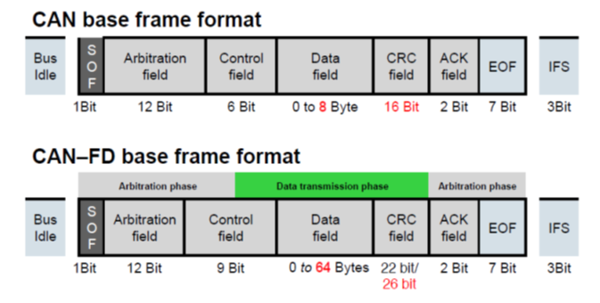

CAN Flexible Data Rate (CAN FD)/MCAN#
This section assumes familiarity with the CAN protocol. Please refer to the previous CAN section for an overview of CAN. CAN FD refers to the protocol while MCAN refers to the physical module on the device that implements the CAN FD protocol.
MCAN Module
Not all C2000 devices have a MCAN module. Refer to the Peripheral Reference Guide for a list of supported modules on your device.
CAN FD Advantages#
Higher bandwidth and throughput
No change in data link layer reliability
No significant price increase (for the MCU or the transceiver)
Relatively easy to understand the protocol since it is an extension of the classic CAN
CAN FD (MCAN)#

Up to 64 bytes per frame
Bigger payload size reduces protocol overhead and improves the effective bit-rate
Data field can be transmitted at bit rates up to 5 Mbps or more
High bit-rate aids applications like “Advanced Driver Assistance Systems” (ADAS), Autonomous driving, and faster firmware updates
MCAN Features#
MCAN module supports both classic CAN and CAN FD
Bit-rate support up to 10 Mbps
Configurable number of TX Queues/FIFO and RX buffers/FIFOs in the message RAM
No concept of mailboxes or message objects
Offers flexibility to take advantage of the available message RAM as required
Filter event support
Any filter element match can trigger a system action like CLA task trigger, PWM trip etc.
Frame time-stamping support
ECC protection for message RAMs
Clock-stop and wake-up from another node
MCAN is not software compatible with DCAN
Message RAM Configuration#
Up to 32 dedicated Transmit buffers. Can be configured as,
Dedicated TX Buffers
TX FIFO
TX Queue
Combination of dedicated TX buffers/TX FIFO
Combination of dedicated TX buffers/TX Queue
Up to 64 dedicated Receive buffers
Two configurable Receive FIFOs (RX FIFO0 and RX FIFO1) with up to 64 element each.
Transmitter Delay Compensation (TDC)#
TDC is a feature that has been introduced in CAN FD. It is not applicable to classic CAN. In CAN protocol, any transmitting node monitors its own transmission. This is required in order to facilitate non-destructive bit-wise arbitration, ascertain acknowledgement of a frame (ACK) by other nodes and handle error frames. One function of the CAN transceiver is to loop back the transmitted data into the receive pin of the CAN module after a delay known as the transceiver loop delay.
All transmitters sample the transmitted data at the sample point (SP), the intersection of TSEG1 and TSEG2, to verify correct transmission. Apart from arbitration, this mechanism is needed to check for problems in the physical layer and to detect other node’s error frames. In case the transmitter delay is greater than TSEG1 (time segment before sample point), a bit error is detected. In order to enable a data phase bit time that is even shorter than the transmitter delay, the delay compensation is introduced. Without TDC, the bit rate in the data phase of a CAN FD frame is limited by the transmitter delay. In other words, TDC enables the support of higher bit-rates in the data phase, where the nominal bit time may be shorter than the loop delay.
Secondary Sample Point (SSP)
During the data phase of transmitting nodes, the delayed transmit data is compared against the received data at the Secondary Sample Point (SSP). The SSP position is defined as the sum of the measured delay from the MCAN’s transmit pin (MCAN_TX), through the transceiver to the receive pin (MCAN_RX) plus a configurable transmitter delay compensation offset. The delay measurement is started within each transmitted CAN FD frame at the falling edge of bit FDF to bit “res”. It is stopped when this edge is seen at the receive pin (MCAN_RX) of the transmitting node.
Enabling transmitter delay compensation
TDC is enabled by setting the TDC bit in DBTP register. Transmitter delay compensation offset is configured by TDCR.TDCO which is used to adjust the position of the SSP. To avoid that a dominant glitch inside the received FDF bit ends the delay compensation measurement before the falling edge of the received “res” bit, resulting in a too-early SSP position, the use of a transmitter delay compensation filter window can be enabled by programming TDCR.TDCF which defines a minimum value for the SSP position. PSR.TDCV shows the actual transmitter delay compensation value.
Resources#
Feedback
Please provide any feedback you may have about the content within C2000 Academy to: c2000_academy_feedback@list.ti.com